|
Roda JC - RBC 11 februari 2001 |
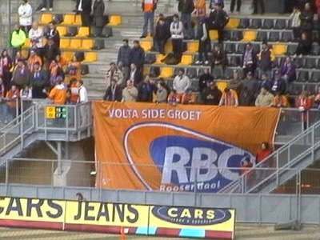
Er waren ongeveer 50 RBC-supporters.
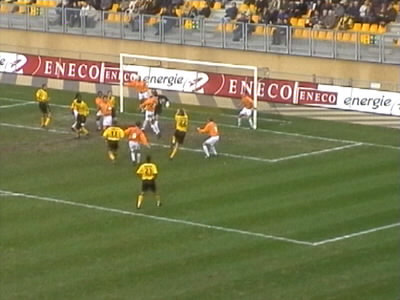
Marc Luijpers (22) scoort de 1-0.
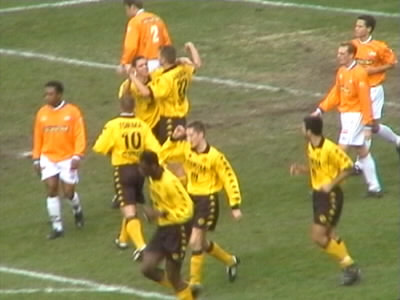
Eindelijk weer eens wat te vieren.
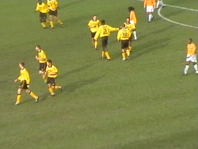
Torma (10) heeft zojuist 2-0 gescoord na een door Anastasiou
geschampte voorzet op maat van Lawal.
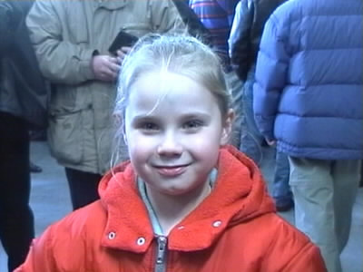
Dit Roda-meëdsje is het dochtertje van onze RML-massah.
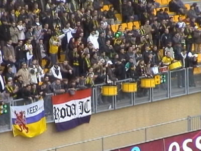
Herken je jezelf op deze foto? Ja? Dan sta je op west!
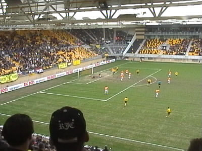
Vrede scoort. Echter zijn doelpunt wordt afgekeurd wegens duwen.
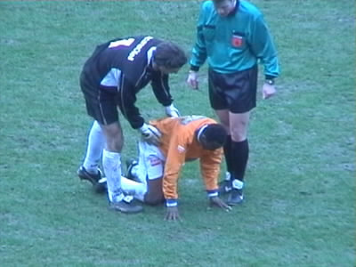
Bakboord betast de heilige grond. Doelman Moens en
scheidsrechter Vink verzoeken hem weer verder te voetballen.
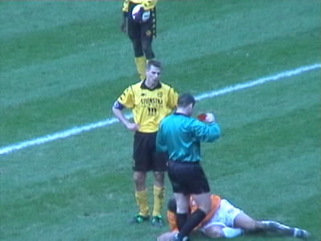
Luijpers krijgt zijn tweede gele kaart, dus rood.
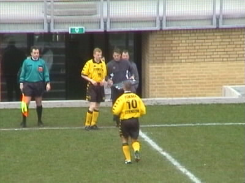
Torma wordt kort daarna gewisseld voor Vandebrouck.
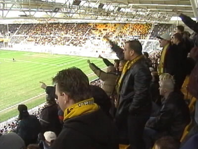
Deze wissel werd niet door iedereen gewaardeerd.
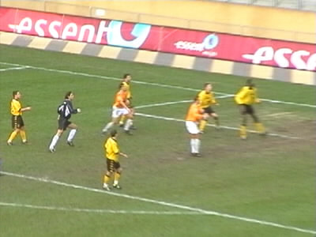
Nadat RBC tot 2-1 is teruggekomen door een treffer van Vos
gaat het met man en macht op jacht naar de gelijkmaker.
Daarbij komt RBC doelman Moens geheel mee naar voren.
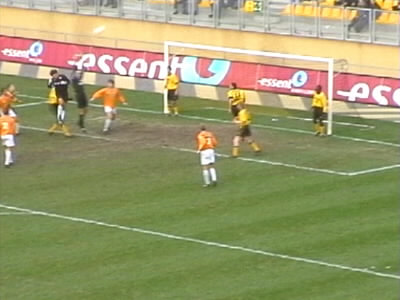
Kalac plukt de bal voor zijn collega weg. Hierna verzuimt
Zeljko zich onsterfelijk te maken door te scoren in het lege
doel aan de overkant.
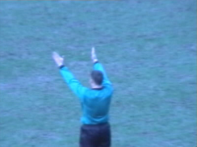
Er werden liefst 4 minuten extra tijd bijgetrokken. RBC kwam
bijna nog op 2-2. Vink maakt hier een bevrijdend einde aan
een belabberde wedstrijd.
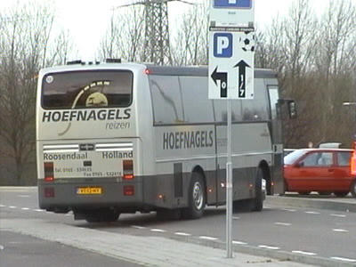
De aftocht van RBC in de meest povere spelersbus tot nog toe.
©KPD